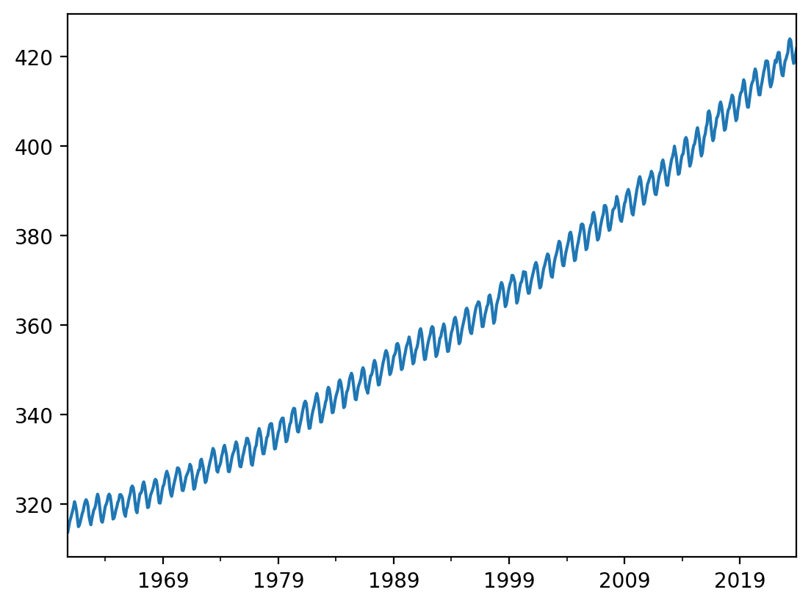
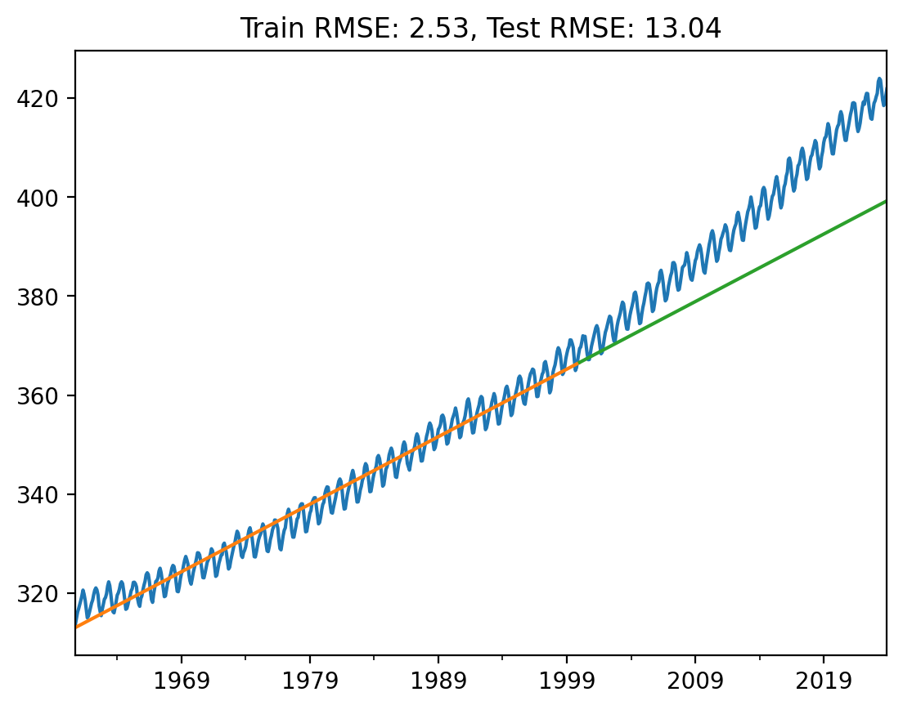
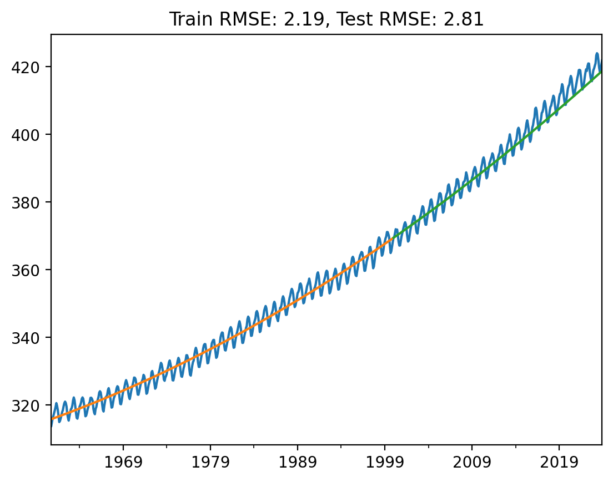
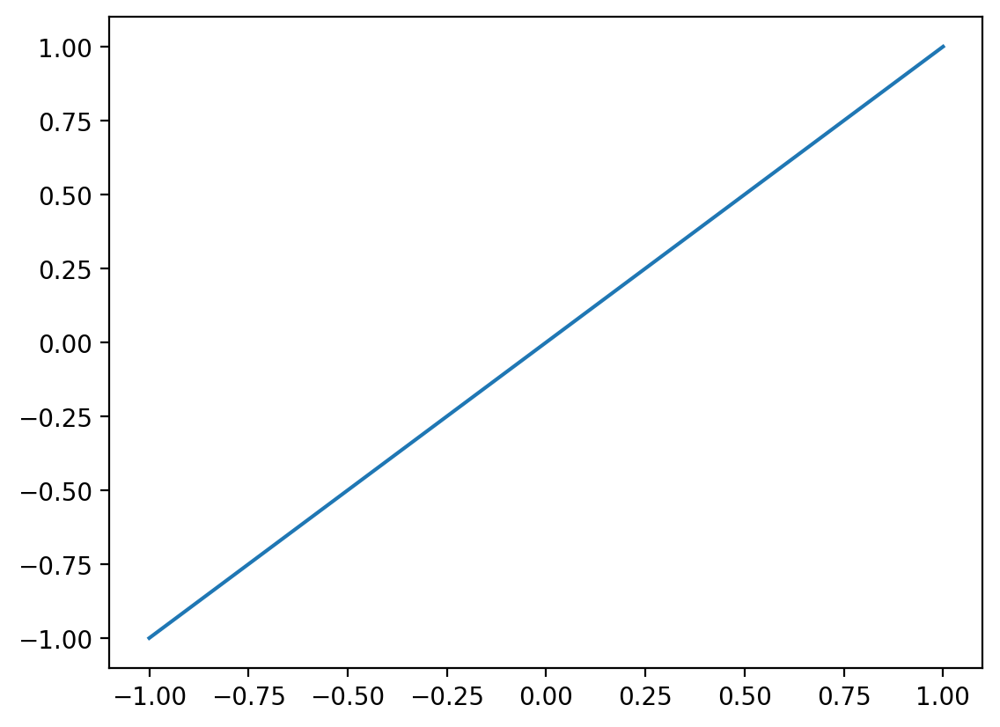
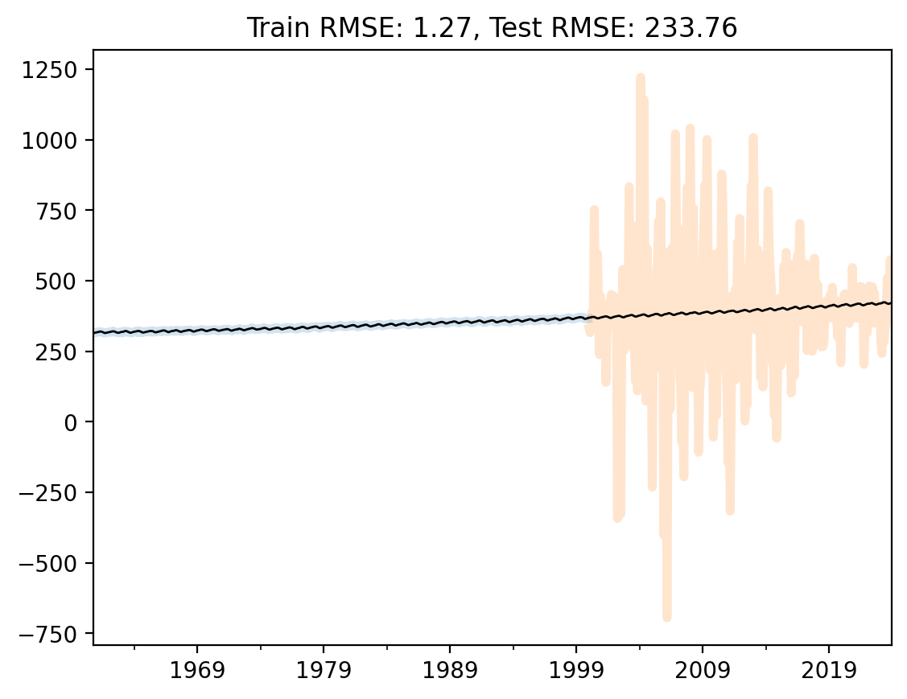

import matplotlib.pyplot as plt
import numpy as np
import pandas as pd
# Retina mode
%config InlineBackend.figure_format = 'retina'
%matplotlib inlineBasis Expansion in Linear Regression
ML
# Download CO2 data from NOAA
url = 'https://gml.noaa.gov/webdata/ccgg/trends/co2/co2_mm_mlo.csv'
names = 'year,month,decimal date,average,deseasonalized,ndays,sdev,unc'.split(',')
# no index
df = pd.read_csv(url, skiprows=72, names=names, index_col=False)df| year | month | decimal date | average | deseasonalized | ndays | sdev | unc | |
|---|---|---|---|---|---|---|---|---|
| 0 | 1960 | 10 | 1960.7896 | 313.83 | 316.83 | -1 | -9.99 | -0.99 |
| 1 | 1960 | 11 | 1960.8743 | 315.00 | 316.88 | -1 | -9.99 | -0.99 |
| 2 | 1960 | 12 | 1960.9563 | 316.19 | 316.96 | -1 | -9.99 | -0.99 |
| 3 | 1961 | 1 | 1961.0411 | 316.89 | 316.86 | -1 | -9.99 | -0.99 |
| 4 | 1961 | 2 | 1961.1260 | 317.70 | 317.08 | -1 | -9.99 | -0.99 |
| ... | ... | ... | ... | ... | ... | ... | ... | ... |
| 754 | 2023 | 8 | 2023.6250 | 419.68 | 421.57 | 21 | 0.45 | 0.19 |
| 755 | 2023 | 9 | 2023.7083 | 418.51 | 421.96 | 18 | 0.30 | 0.14 |
| 756 | 2023 | 10 | 2023.7917 | 418.82 | 422.11 | 27 | 0.47 | 0.17 |
| 757 | 2023 | 11 | 2023.8750 | 420.46 | 422.43 | 21 | 0.91 | 0.38 |
| 758 | 2023 | 12 | 2023.9583 | 421.86 | 422.58 | 20 | 0.69 | 0.29 |
759 rows × 8 columns
df.index = pd.to_datetime(df[['year', 'month']].apply(lambda x: '{}-{}'.format(x[0], x[1]), axis=1))/tmp/ipykernel_1882852/1556785423.py:1: FutureWarning: Series.__getitem__ treating keys as positions is deprecated. In a future version, integer keys will always be treated as labels (consistent with DataFrame behavior). To access a value by position, use `ser.iloc[pos]`
df.index = pd.to_datetime(df[['year', 'month']].apply(lambda x: '{}-{}'.format(x[0], x[1]), axis=1))df| year | month | decimal date | average | deseasonalized | ndays | sdev | unc | |
|---|---|---|---|---|---|---|---|---|
| 1960-10-01 | 1960 | 10 | 1960.7896 | 313.83 | 316.83 | -1 | -9.99 | -0.99 |
| 1960-11-01 | 1960 | 11 | 1960.8743 | 315.00 | 316.88 | -1 | -9.99 | -0.99 |
| 1960-12-01 | 1960 | 12 | 1960.9563 | 316.19 | 316.96 | -1 | -9.99 | -0.99 |
| 1961-01-01 | 1961 | 1 | 1961.0411 | 316.89 | 316.86 | -1 | -9.99 | -0.99 |
| 1961-02-01 | 1961 | 2 | 1961.1260 | 317.70 | 317.08 | -1 | -9.99 | -0.99 |
| ... | ... | ... | ... | ... | ... | ... | ... | ... |
| 2023-08-01 | 2023 | 8 | 2023.6250 | 419.68 | 421.57 | 21 | 0.45 | 0.19 |
| 2023-09-01 | 2023 | 9 | 2023.7083 | 418.51 | 421.96 | 18 | 0.30 | 0.14 |
| 2023-10-01 | 2023 | 10 | 2023.7917 | 418.82 | 422.11 | 27 | 0.47 | 0.17 |
| 2023-11-01 | 2023 | 11 | 2023.8750 | 420.46 | 422.43 | 21 | 0.91 | 0.38 |
| 2023-12-01 | 2023 | 12 | 2023.9583 | 421.86 | 422.58 | 20 | 0.69 | 0.29 |
759 rows × 8 columns
df.average.plot()<AxesSubplot:>
train_cutoff = 2000
train = df[df.year < train_cutoff]
test = df[df.year >= train_cutoff]
df.average.plot()
train.average.plot(color='blue')
test.average.plot(color='orange')
len(train), len(test)(471, 288)
from sklearn.linear_model import LinearRegressionmonths_from_start = range(len(df))
months_from_start = np.array(months_from_start).reshape(-1, 1)Model 1: Vanilla Linear Regression
lr1 = LinearRegression()
lr1.fit(months_from_start[:len(train)], train.average.values)
yhat1_test = lr1.predict(months_from_start[len(train):])
yhat1_train = lr1.predict(months_from_start[:len(train)])
yhat_train = pd.Series(yhat1_train, index=train.index)
yhat_test = pd.Series(yhat1_test, index=test.index)
df.average.plot()
yhat_train.plot()
yhat_test.plot()
# Train error
train_rmse = np.sqrt(np.mean((yhat_train - train.average)**2))
test_rmse = np.sqrt(np.mean((yhat_test - test.average)**2))
plt.title('Train RMSE: {:.2f}, Test RMSE: {:.2f}'.format(train_rmse, test_rmse))Text(0.5, 1.0, 'Train RMSE: 2.53, Test RMSE: 13.04')
# Polynomial regression with degree d
from sklearn.preprocessing import PolynomialFeatures
def poly_regression(d, train, test):
months_from_start = range(len(df))
months_from_start = np.array(months_from_start).reshape(-1, 1)
lr = LinearRegression()
pf = PolynomialFeatures(degree=d)
X_train = pf.fit_transform(months_from_start[:len(train)])
X_test = pf.fit_transform(months_from_start[len(train):])
lr.fit(X_train, train.average.values)
yhat_test = lr.predict(X_test)
yhat_train = lr.predict(X_train)
yhat_train = pd.Series(yhat_train, index=train.index)
yhat_test = pd.Series(yhat_test, index=test.index)
df.average.plot()
yhat_train.plot()
yhat_test.plot()
# Train error
train_rmse = np.sqrt(np.mean((yhat_train - train.average)**2))
test_rmse = np.sqrt(np.mean((yhat_test - test.average)**2))
plt.title('Train RMSE: {:.2f}, Test RMSE: {:.2f}'.format(train_rmse, test_rmse))poly_regression(2, train, test)
### Adding sine and cosine terms
def sine_cosine_features(X, n):
"""
X: array of shape (n_samples, 1)
n: number of sine and cosine features to add
"""
for i in range(1, n+1):
X = np.hstack([X, np.sin(i*X), np.cos(i*X)])
return XX = np.linspace(-1, 1, 100).reshape(-1, 1)_ = plt.plot(X, sine_cosine_features(X, 0))
def poly_sine_cosine_regression(n, train, test):
months_from_start = range(len(df))
months_from_start = np.array(months_from_start).reshape(-1, 1)
lr = LinearRegression()
X_train = sine_cosine_features(months_from_start[:len(train)], n)
X_test = sine_cosine_features(months_from_start[len(train):], n)
print(X_train.shape, X_test.shape)
lr.fit(X_train, train.average.values)
yhat_test = lr.predict(X_test)
yhat_train = lr.predict(X_train)
yhat_train = pd.Series(yhat_train, index=train.index)
yhat_test = pd.Series(yhat_test, index=test.index)
yhat_train.plot(alpha=0.2, lw=4)
yhat_test.plot(alpha=0.2, lw=4)
df.average.plot(color='k', lw=1)
# Train error
train_rmse = np.sqrt(np.mean((yhat_train - train.average)**2))
test_rmse = np.sqrt(np.mean((yhat_test - test.average)**2))
plt.title('Train RMSE: {:.2f}, Test RMSE: {:.2f}'.format(train_rmse, test_rmse))poly_sine_cosine_regression(6, train, test)(471, 729) (288, 729)
Random Fourier Features
def rff_featurise(X, n_components=100):
# Random Fourier Features
# https://scikit-learn.org/stable/modules/generated/sklearn.kernel_approximation.RBFSampler.html
from sklearn.kernel_approximation import RBFSampler
rbf_feature = RBFSampler(gamma=1, n_components=n_components, random_state=1)
X_features = rbf_feature.fit_transform(X)
return X_featuresdef poly_rff_regression(n, train, test):
months_from_start = range(len(df))
months_from_start = np.array(months_from_start).reshape(-1, 1)
lr = LinearRegression()
X_train = rff_featurise(months_from_start[:len(train)], n)
X_test = rff_featurise(months_from_start[len(train):], n)
print(X_train.shape, X_test.shape)
lr.fit(X_train, train.average.values)
yhat_test = lr.predict(X_test)
yhat_train = lr.predict(X_train)
yhat_train = pd.Series(yhat_train, index=train.index)
yhat_test = pd.Series(yhat_test, index=test.index)
yhat_train.plot(alpha=0.2, lw=4)
yhat_test.plot(alpha=0.2, lw=4)
df.average.plot(color='k', lw=1)
# Train error
train_rmse = np.sqrt(np.mean((yhat_train - train.average)**2))
test_rmse = np.sqrt(np.mean((yhat_test - test.average)**2))
plt.title('Train RMSE: {:.2f}, Test RMSE: {:.2f}'.format(train_rmse, test_rmse))poly_rff_regression(440, train, test)(471, 440) (288, 440)